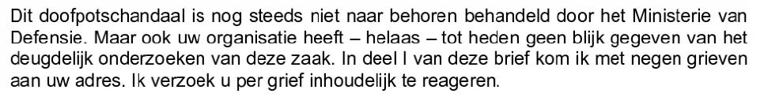

Beweisstück · Brief
Giltay an den Nationalen Ombudsmann, 13. März 2018
Die Passage
„Dieser Vertuschungsskandal ist vom Verteidigungsministerium noch immer nicht ordnungsgemäß behandelt worden. Aber auch Ihre Organisation hat – leider – bis heute keine gründliche Untersuchung dieser Angelegenheit erkennen lassen. In Teil I dieses Briefes richte ich neun Beschwerdepunkte an Sie. Ich bitte Sie, auf jeden Beschwerdepunkt inhaltlich zu reagieren.“ Seite 1, zweiter Absatz des Briefes. Aus dem Niederländischen übersetzt; der Originaltext steht unten.
Originaltext
“Dit doofpotschandaal is nog steeds niet naar behoren behandeld door het Ministerie van Defensie. Maar ook uw organisatie heeft — helaas — tot heden geen blijk gegeven van het deugdelijk onderzoeken van deze zaak. In deel I van deze brief kom ik met negen grieven aan uw adres. Ik verzoek u per grief inhoudelijk te reageren.” Wörtlich übernommen.

Warum dieses Dokument wichtig ist
Im Jahr 2018, nach der gerichtlichen Rehabilitierung, reichte Giltay beim Nationalen Ombudsmann neun konkrete Beschwerdepunkte ein, untermauert durch ein Dossier mit 19 Beweisstücken. Dies ist der Brief, mit dem er das tat. Darin bittet Giltay den Ombudsmann, auf jeden Beschwerdepunkt inhaltlich zu reagieren. Der Brief erwähnt auch, dass Giltay zuvor Exemplare seines Buches im Büro des Ombudsmanns abgegeben hatte, teils auf Bitten eines von dessen eigenen Mitarbeitern. Der Ombudsmann ging in seiner Antwort vom 10. April 2018, einem Schreiben von einer Seite, nicht inhaltlich auf die Beschwerdepunkte ein: Er sah keinen Anlass, den früher eingenommenen Standpunkt zu revidieren, und beendete die Korrespondenz.
Herkunft
- Dokument
- Brief, 16 Seiten, in zwei Teilen, mit 19 Anlagen
- Absender
- Edwin Giltay, Den Haag
- Empfänger
- Der Nationale Ombudsmann, Herr Reinier van Zutphen, Bezuidenhoutseweg 151, Den Haag
- Datum
- 13. März 2018
- Betreff
- Teil I: neun Beschwerdepunkte über den Nationalen Ombudsmann · Teil II: zwei neue Beschwerden über das Verteidigungsministerium
- Übergabe
- Überschrieben mit „in persoon afgegeven tegen bewijs van ontvangst“ (persönlich übergeben gegen Empfangsbestätigung)
- Anlagen
- 19 Anlagen, aufgelistet auf Seite 16
- Abschrift an
- mr. Y. Moszkowicz, Utrecht
- Geschwärzt
- Die Unterschrift auf Seite 15 und Namen Dritter auf den Seiten 3, 4, 8, 10, 11, 13, 14 und 16 sind in dieser Kopie geschwärzt
- Bezug
- Beantwortet vom Nationalen Ombudsmann mit Brief vom 10. April 2018
- Sprache
- Niederländisch
- Aufbewahrt bei
- Archiv des Autors
Zitiert in: dem Essay „Das Verbot fiel, das Buch hielt stand“ im Kapitel (9) „Für immer festgehalten“.
Beweiskarte: https://
Dokument: https://
Zuletzt geändert am 13. September 2026, abgerufen am 3. Oktober 2026.

Diese Seite ist ein Beweisstück zum Buch Der Cover-up-General von Edwin Giltay und zur dazugehörigen Website.